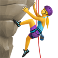

MEUS EMOJIS FAVORITOS
Vamos juntar agora os conceitos de listas e emojis. Você vai pegar 06 categorias (carinhas, mãos, animais, esportes, comidas e objetos) e vai fazer uma lista com três emojis favoritos em cada assunto
E não se esqueça de colocar o código UNICODE para cada um deles, para facilitar em uma consulta futura.
IMPORTANTE: pode-se encontrar as referências de todos os emojis, super atualizada, no site da emojipedia.org.
1 - Carinhas
2 - mãos

3 - animais
4 - esportes
5 - comidas
6 - objetos